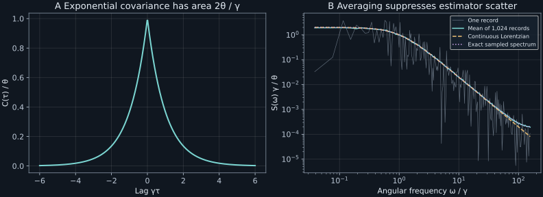

Chapter 16 · Lecture 19
Noise spectra, filters, and thermal fluctuations
A longer noise record makes Fourier bins narrower but does not make the unsmoothed power at one frequency reliable. In the OU laboratory below, increasing record duration eightfold leaves the relative periodogram variance near one. Averaging independent records reveals the Lorentzian underneath. The task is to infer a relaxation time and a physical noise variance while keeping transform conventions, estimator uncertainty, sampling aliases, and filtering distinct.
The topic sequence follows NPTEL lecture 19: stationarity, finite-record Fourier power, covariance transforms, Langevin filtering, matrix spectra, and resistor thermal noise. The ensemble finite-window proof and Gaussian periodogram inconsistency argument make the limiting statements precise. The book uses a transform with no prefactor in the forward direction, differing from the lecture's spectrum by $2\pi$.
16.1 Fix a measure before assigning spectral power L19 1:56
Let $X_t$ be a real, zero-mean, second-order stationary process: its variance is finite and its covariance $C_X(\tau)=\mathbb E[X_{t+\tau}X_t]$ depends only on lag. For scalar classical variables, stationarity and commutativity give $C_X(-\tau)=C_X(\tau)$. Suppose $C_X$ is absolutely integrable over the real line. Define the two-sided angular-frequency spectral density by
$$S_X(\omega)=\int_{-\infty}^\infty C_X(\tau)e^{i\omega\tau}d\tau,\qquad C_X(\tau)=\int_{-\infty}^\infty\frac{d\omega}{2\pi}S_X(\omega)e^{-i\omega\tau}.\tag{16.1}$$The inversion holds under the usual Fourier inversion hypotheses, in particular at continuity points when applicable. Angular frequency $\omega$ has units inverse seconds; $S_X$ has units squared signal times seconds. Variance is the spectral area $C_X(0)=\int S_Xd\omega/(2\pi)$, not simply $\int S_Xd\omega$. A real scalar covariance gives a real even spectrum. Positive definiteness of covariance makes the spectrum nonnegative, as the finite-window argument below also shows.
For a nonzero mean $\mu$, first center the signal. The uncentered correlation has an added constant $\mu^2$, whose transform is $2\pi\mu^2\delta(\omega)$. This is a spectral line at zero frequency rather than a broad noise floor. Other stationary processes can have discrete spectral lines even when centered, so an integrable density is a restricted case of the more general spectral-measure description. A sample path need not itself be absolutely integrable over infinite time for a covariance spectrum to exist.
16.2 A finite-window identity supplies the spectral limit L19 5:14
For record duration $T_r\gt0$, define Fourier amplitude $A_{T_r}(\omega)=\int_0^{T_r}X_te^{i\omega t}dt$ and raw periodogram $I_{T_r}(\omega)=|A_{T_r}(\omega)|^2/T_r$. The subscript distinguishes record duration from thermodynamic temperature. A periodogram is a random estimate from one record; $S_X$ is an ensemble property of a stationary law.
Expand the modulus square into a double integral over $0\leq t,s\leq T_r$. Taking expectation replaces $X_tX_s$ by $C_X(t-s)$. For fixed lag $\tau=t-s$, the allowed positions along the square have length $T_r-|\tau|$. Divide by record duration to obtain the triangular weight in (16.2). Its magnitude is at most one and it tends to one at each fixed lag. Absolute integrability of $C_X$ permits dominated convergence. Since every expected periodogram is nonnegative, its limit $S_X$ is nonnegative. ∎
This proof establishes an ensemble-mean limit without assuming ergodicity. Replacing covariance expectations by averages along one long trace asks a separate ergodic question. Interchanging that trace average with a frequency integral or a limit requires still more control. Ergodicity concerns equality of suitable long-time and ensemble averages; it does not by itself say a process literally visits every state or make a raw periodogram consistent.
The finite triangular lag weight is a useful bias diagnosis. Correlations at lags comparable with the record length are downweighted; longer lags are missing. Windowing a record changes the weight further. A longer record improves frequency resolution and changes this expectation bias, but its binwise randomness needs a different treatment.
16.3 A raw periodogram does not settle to one curve
The OU process supplies a precise counterexample to an overstrong pointwise limit. Its finite-record amplitude $A=A_{T_r}(\omega)$ is a centered complex Gaussian, because its real and imaginary parts are deterministic linear integrals of a jointly Gaussian process. Gaussian fourth-moment factorization gives $\operatorname{Var}(|A|^2)=(\mathbb E|A|^2)^2+|\mathbb E[A^2]|^2$. Therefore the relative periodogram variance is at least one at every nontrivial record length, not a quantity forced to vanish by increasing duration.
At a fixed nonzero frequency, the nonconcentration can be stated more strongly. In $\mathbb E[A^2]$, changing to lag and sum-time coordinates leaves an oscillatory inner integral of $e^{2i\omega s}$. Its magnitude is bounded by $1/|\omega|$, independent of record length. Hence $|\mathbb E[A^2]|/T_r\leq\|C_X\|_1/(T_r|\omega|)\to0$. Equation (16.2) gives $\mathbb E|A|^2/T_r\to S_X(\omega)$.
Consequently the real and imaginary parts of $A/\sqrt{T_r}$ approach independent centered Gaussians of variance $S_X(\omega)/2$. Their squared sum has limit distribution $S_X(\omega)$ times a unit-mean exponential random variable. When $S_X(\omega)\gt0$, it does not converge in probability to that mean. This Gaussian derivation directly separates convergence of expectation from convergence of the estimator.
Averaging $M$ independent periodograms divides their variance by $M$ while retaining the mean. Averaging neighboring frequency bins can also reduce scatter, with a bias-versus-resolution tradeoff and dependence conditions. In practice one often divides a long record into segments, applies a taper, and averages spectra. The effective number of independent estimates depends on overlap and correlations. A smooth-looking curve is not automatically a more accurate high-resolution estimate.
16.4 The OU spectrum is a normalized Lorentzian L19 24:10
For stationary thermal velocity $V_t$, write $\theta=k_BT/m$ and use covariance $C_V(\tau)=\theta e^{-\gamma|\tau|}$ with $\gamma\gt0$. Evenness reduces its transform to $2\theta\int_0^\infty e^{-\gamma\tau}\cos\omega\tau\,d\tau$. The integral is the real part of $1/(\gamma-i\omega)$, giving
$$S_V(\omega)=\frac{2\theta\gamma}{\gamma^2+\omega^2}.\tag{16.3}$$The half-width at half maximum is $\gamma$, so the spectrum identifies a relaxation rate when the OU model is appropriate. Its area is $\int S_Vd\omega/(2\pi)=\theta$, since $\int_{-\infty}^{\infty}d\omega/(\gamma^2+\omega^2)=\pi/\gamma$. A height fit without area normalization can confuse a change of variance with a change of correlation time.
The random force $\zeta_t$ in $m\dot V+m\gamma V=\zeta$ has covariance $2m\gamma k_BT\delta(\tau)$, hence flat spectrum $S_\zeta=2m\gamma k_BT$. This white noise is a generalized process with no finite pointwise variance. The velocity response filters high frequencies and produces the integrable Lorentzian. The derivative transform has factor $-i\omega$ under (16.1), so the transfer function from force to velocity is $H(\omega)=1/[m(\gamma-i\omega)]$. Multiplying $S_\zeta$ by $|H|^2$ reproduces (16.3).
The sampled OU law at spacing $h$ is an autoregression with coefficient $r=e^{-\gamma h}$ and innovation variance $\theta(1-r^2)$. Its spectrum, normalized so that integration over $|\omega|\leq\pi/h$ recovers variance, is $S_h(\omega)=h\theta(1-r^2)/(1+r^2-2r\cos\omega h)$. This is the periodic alias sum of the continuous spectrum, not simply its restriction to the sampling band. At low frequency and fine sampling it approaches (16.3); near the sampling limit, the distinction is visible in Figure 16.1.
16.5 Filtering preserves spectral positivity L19 28:38
Let a stationary input column $\boldsymbol X_t$ drive a stable linear time-invariant filter with matrix impulse response $h(s)$. Its output is $\boldsymbol Y_t=\int h(s)\boldsymbol X_{t-s}ds$, assuming integrability sufficient for stationary output and exchanges of integrals. The transfer matrix is $H(\omega)=\int h(s)e^{i\omega s}ds$. Causality means $h(s)=0$ for negative lag, but the spectral multiplication itself only needs a well-defined stable filter.
Use the later-index-first matrix covariance $C_X(\tau)=\mathbb E[\boldsymbol X_{t+\tau}\boldsymbol X_t^\mathsf T]$ and its transform $S_X$. Substitute the filter into the output covariance. The integrand becomes $h(s)C_X(\tau-s+r)h(r)^\mathsf T$. Transforming lag contributes $e^{i\omega(s-r)}$, which separates the two impulse-response integrals. Thus
$$S_Y(\omega)=H(\omega)S_X(\omega)H(\omega)^\dagger,\tag{16.4}$$where dagger denotes complex conjugate transpose. The scalar rule is $S_Y=|H|^2S_X$. The transfer function is the complex amplitude ratio $H$; its modulus squared is the power-gain ratio. Calling $|H|^2$ the full transfer function would discard phase and cross-channel information.
Stationarity gives $C_X(-\tau)=C_X(\tau)^\mathsf T$ for real signals, so $S_X=S_X^\dagger$ is Hermitian. For any complex column $z$, $z^\dagger S_Xz\geq0$, as follows from the corresponding expected squared Fourier projection. It is therefore positive semidefinite. Equation (16.4) preserves that property because $z^\dagger S_Yz=(H^\dagger z)^\dagger S_X(H^\dagger z)$. In particular $|S_{12}|^2\leq S_{11}S_{22}$ for a two-channel spectral matrix. An arbitrary pair of cross-spectrum curves need not be physically admissible.
For the magnetic velocity model, imaginary cross-spectra retain the odd lag correlations whose symmetric contribution vanished from the displacement diffusion tensor. A Hermitian spectrum can have complex off-diagonal entries without being a real symmetric matrix. This is how a phase-sensitive frequency description preserves signed rotational information.
16.6 Johnson–Nyquist noise: convert conventions by preserving variance L19 47:28
Let $R_e\gt0$ be a resistance in ohms at equilibrium temperature $T$. In the classical low-frequency regime, its open-circuit voltage-noise source has $S_e(\omega)=2k_BTR_e$ in the two-sided angular-frequency convention (16.1). To obtain the one-sided density per hertz, set $\omega=2\pi f$. Evenness gives $\int_{-\infty}^\infty S_ed\omega/(2\pi)=\int_0^\infty 2S_e(2\pi f)df$, so the one-sided density is $G_e(f)=4k_BTR_e$. The factor of two comes from folding negative frequencies; the $2\pi$ belongs to the change of integration variable.
Nyquist's original primary paper, printed page 112, equation (1), states the squared voltage in a positive cycles-per-second band as $4RkT\,d\nu$. Printed page 113, equations (5)–(6), carries it through a network transfer admittance. That is the physical source for the normalization; the modern convention conversion here preserves the same measured variance.
To check the coefficient, connect the resistor's source to a capacitor $C_e\gt0$ through the series resistance and measure capacitor voltage. The low-pass transfer is $H_c(\omega)=1/(1-i\omega R_eC_e)$. Integration gives
$$\mathbb E[V_c^2]=\int_{-\infty}^\infty\frac{d\omega}{2\pi}\frac{2k_BTR_e}{1+(\omega R_eC_e)^2}=\frac{k_BT}{C_e}.\tag{16.5}$$The result follows by substituting $z=\omega R_eC_e$ and integrating $1/(1+z^2)$ to $\pi$. It yields mean capacitor energy $C_e\mathbb E[V_c^2]/2=k_BT/2$, precisely equipartition. An erroneous one-sided/two-sided factor would fail this physical check. Resistance changes bandwidth and relaxation time while leaving the integrated equilibrium capacitor variance unchanged.
The ideal white source is only a band approximation. At sufficiently high frequency or low temperature, quantum and frequency-dependent impedance effects matter; no finite real resistor emits a classical flat spectrum to arbitrarily high frequency. The chosen ideal RC integral is consistent when its dominant band lies in the regime where the classical source and ideal components are adequate. Thermal-current circuit analogies must also use the actual topology: $L\dot I+R_eI=e$ describes a series resistance–inductance loop.
16.7 Laboratory: resolution, averaging, and spectral area
The laboratory generates 1,024 exact stationary OU records with step 0.02 and 8,192 samples, using seed 2026110816. The discrete Fourier periodogram is $h|\sum_{j=0}^{n-1}x_je^{i\omega jh}|^2/n$. At the discrete Fourier frequencies, Parseval's identity makes its two-sided bin sum equal to the record mean square. Real-input output stores positive frequencies, so interior bins are doubled for the area; zero and the sampling-limit endpoint are counted once.
Run python code/ch16_spectra.py. It writes JSON and text output beside the source, without network calls. The program compares periodogram means with the exact finite-record discrete triangular-covariance sum, measures relative variance at the same nonzero frequency for two record lengths, integrates the RC spectrum, and checks Hermitian positivity after filtering correlated two-channel inputs. These tests distinguish normalization, finite-length bias, and random estimation scatter.
duration mean periodogram finite-record mean relative variance 20.48 0.79962567 0.80602849 0.92260528 163.84 0.79662209 0.79914090 1.01739133 RC filtered variance=0.33333333; kBT/C=0.33333333
The periodogram expectation changes only modestly at the chosen frequency, while its relative variance remains near one. Increasing duration eightfold has not supplied eight independent spectral estimates at that frequency. Figure 16.1 compares one raw record, the ensemble average, the continuous Lorentzian, and the exact sampled spectrum. Their high-frequency differences include aliasing, not just statistical scatter.

import numpy as np
def ou_spectrum(omega, gamma, variance):
if gamma <= 0 or variance < 0:
raise ValueError("positive rate and nonnegative variance required")
omega = np.asarray(omega)
return 2*variance*gamma/(gamma**2 + omega**2)The function returns a two-sided angular-frequency density, not power already integrated over a bandwidth. It accepts scalar or array frequencies and writes no files. The integration measure and any instrument filter must still be applied before comparing with a measured mean square.
16.8 What a spectrum identifies
A covariance spectrum describes second-order temporal structure. For a jointly Gaussian process, mean and covariance determine finite-dimensional laws. Without Gaussianity, identical spectra can coexist with different higher-order statistics and event structure. Stationarity is also a model condition, not guaranteed by drawing a finite window. Slow drift can contaminate low-frequency power, and ensemble stationarity does not remove finite-record uncertainty.
The filter rule gives the output spectrum for a specified linear stationary system. It does not make arbitrary observed noise thermal or establish fluctuation–dissipation. That stronger connection requires equilibrium and a conjugate perturbing force, developed in chapter 17.
16.9 Exercises with worked solutions
Exercise 16.1 — A factor-of-two diagnosis (conceptual)
A calculation integrates $4k_BTR_e$ over negative and positive hertz. What has gone wrong?
Worked solution
The coefficient $4k_BTR_e$ is a one-sided per-hertz voltage density. Integrating it over both signs counts the same real-signal variance twice. The two-sided per-hertz density is $2k_BTR_e$; equivalently use the angular density $2k_BTR_e$ with measure $d\omega/(2\pi)$. Preserving the integral, rather than memorizing isolated factors, resolves the convention. The RC equipartition check reveals the error directly.
Exercise 16.2 — Does a spectrum identify a mechanism? (conceptual)
A two-state stationary fluctuator and a centered Gaussian OU process have the same exponential covariance. Can their Lorentzian spectra distinguish them?
Worked solution
No. The spectrum is the transform of that shared covariance, so it is identical after matching variance and decay rate. Their marginal distributions and path structures differ: one jumps between two levels, the other is Gaussian and continuous. Higher moments, histograms, or resolved events can distinguish them. A Lorentzian fit establishes a second-order relaxation pattern under the assumed stationarity, not a unique microscopic model.
Exercise 16.3 — Derive Gaussian periodogram variance (derive)
Write $A=U+iV$ with centered jointly Gaussian real components. Prove the fourth-moment identity used in Section 16.3.
Worked solution
Let $a=\mathbb E[U^2]$, $b=\mathbb E[V^2]$, and $c=\mathbb E[UV]$. Gaussian moments give $\mathbb E[U^4]=3a^2$, $\mathbb E[V^4]=3b^2$, and $\mathbb E[U^2V^2]=ab+2c^2$. Expanding $(U^2+V^2)^2$ and subtracting $(a+b)^2$ gives variance $2a^2+2b^2+4c^2$. Meanwhile $(\mathbb E|A|^2)^2+|\mathbb E[A^2]|^2=(a+b)^2+|(a-b)+2ic|^2$ gives the same expression. Division by record duration squared proves the periodogram relation.
Exercise 16.4 — Derive the sampled OU spectrum (derive)
Transform the discrete covariance $\theta r^{|k|}$ at step $h$ and recover $S_h$.
Worked solution
The density in physical angular-frequency units is $h\theta\sum_{k=-\infty}^{\infty}r^{|k|}e^{i\omega hk}$. Split off $k=0$ and sum the two geometric series, giving $h\theta[1+re^{i\omega h}/(1-re^{i\omega h})+re^{-i\omega h}/(1-re^{-i\omega h})]$. Combining denominators yields $h\theta(1-r^2)/(1+r^2-2r\cos\omega h)$. Integration over one sampling band kills all nonzero Fourier modes, leaving variance $\theta$. This verifies the required factor of $h$.
Exercise 16.5 — Choose independent averaging (compute/design)
If individual periodograms have relative standard deviation approximately one, how many independent records reduce it to approximately 0.1?
Worked solution
The average of $M$ independent, identically distributed estimates has variance divided by $M$ and unchanged mean, so relative standard deviation becomes $1/\sqrt M$. The target 0.1 requires approximately 100 records. Merely making one raw record a hundred times longer does not provide that same binwise averaging. Correlated overlapping segments have an effective independent count smaller than their nominal count and need an uncertainty analysis.
Exercise 16.6 — Test an impossible spectral matrix (compute/design)
A two-channel estimate proposes $S_{11}=S_{22}=1$ and real $S_{12}=S_{21}=1.2$ at a frequency. Is it admissible?
Worked solution
The matrix is Hermitian but has determinant $1-1.2^2=-0.44$ and eigenvalues 2.2 and $-0.2$. It is not positive semidefinite. The difference channel would have density $S_{11}+S_{22}-2S_{12}=-0.4$, impossible for an expected squared Fourier amplitude. The coherence bound $|S_{12}|^2\leq S_{11}S_{22}$ detects the same defect. A physically valid estimation procedure should preserve the joint spectral covariance rather than fit each entry independently without constraints.
16.10 Sources and attribution
- V. Balakrishnan, NPTEL lecture 19, course 115106089. The book explicitly separates the ensemble spectral identity from raw-periodogram consistency and converts the lecture's transform normalization.
- H. Nyquist, Thermal Agitation of Electric Charge in Conductors, Physical Review 32, 110–113 (1928). Verified primary scan, printed pages 112–113, equations (1), (4)–(8), inspected directly. Used for thermal voltage normalization, physical filtering, and the classical-regime qualification.